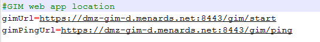

If you are on prod environment and you save a design, you can only recall it if you are swtiched to stage environment. If you are in stage, you can save your deck and recall your deck under stage. Make sure your designit config gim is set to stage. Do this by opening C:\menards\env\config\gim.properties. Ensure the gim-d and switch to gim-s from the picture here

gimUrl=https://dmz-gim.menard-inc.com:8443/gim/start
gimPingUrl=https//dmz-gim.menard-inc.com:8443/gim/ping
in designitconfig.properties set evn to (don't use internal)
evn=prod.main.store
NOTE: We want to use stage, and try to never use prod when testing MCRs in the lab, even regression
gimUrl=https://dmz-gim-s.menards.net:8443/gim/start
gimPingUrl=https//dmz-gim-s.menards.net:8443/gim/ping
in designitconfig.properties set evn to (don't use internal)
evn=stage.ua-designit.store
You should be able to save and recall regardless of what environment, unlike deck.
If you still can't, it's probably because the Certs are not installed if the PC have been recently bare metaled or restored somehow. But baremetalling should have taking care of installing the certs...